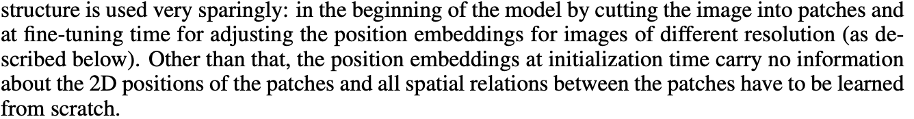
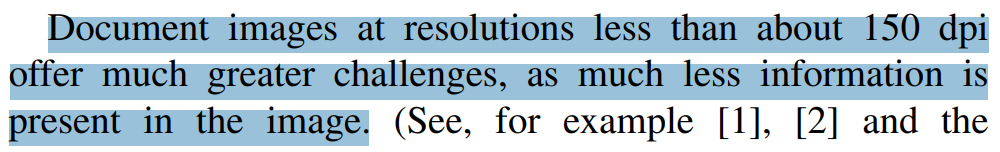
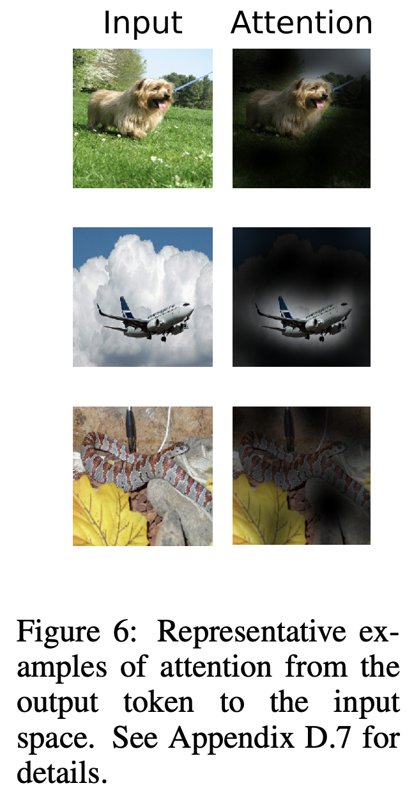
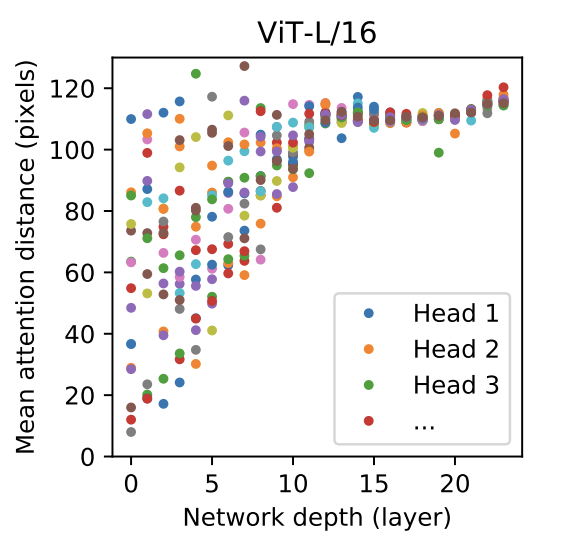

Q&A
Contents
Q&A#
GELU를 사용한 이유#
안녕하세요, 논문읽으면서 궁금한 부분 공유드립니다. 논문 4페이지에서 ‘The MLP contains two layers with a GELU non-linearity.’ MLP 단에서 활성화 함수로 GELU를 사용했다고 하는데, 여러 활성화 함수 중에서 왜 선택하였는지는 언급이 없는 것 같네요. 제 생각은 아래 2개 정도로 생각이 드는데, 아마 다른 이유도 있겠죠?
ReLU, ELU 등 다른 활성화 함수와 비교해서 성능을 확인해보았을 때 GELU의 성능이 더 좋았다.
아니면 BERT, GPT등에서 사용되는 함수여서 동일하게 적용해보았다.
참고자료(Activation functions 에 대한 소개 글) :
https://mlfromscratch.com/activation-functions-explained/#/
저도 1, 2 같은 생각입니다. ViT가 나타나기 이전에 BERT, GPT 등 여러 Transformer 네트워크에서 다른 actiation function보다 좋은 성능을 보여주었기 때문에 당연하게(?) 사용되지 않았을까라는 생각이드네요.
당시에 SOTA 모델들이 GELU를 많이 사용했다라고 읽었던거 같아요 그래서 보증된 효과라 생각해서 쓴거라 생각합니다
cls_token와 pe를 추가하는 순서#
다음 코드에서 함수 _pos_embed는 pe를 더하고 cls_token을 추가하는 것과 cls_token을 추가하고 pe를 더하는 것, 두 가지를 구현해놓았습니다. 두 가지의 차이가 뭘까요?
DeiT-3를 사용할때 PE를 더하고 cls_token을 추가해야하는 것 같습니다… 구체적인 내용은 모르겠네요;;
https://github.com/rwightman/pytorch-image-models/commit/7d4b3807d5c40b0f8d7e66d27a7672684e482996
논문 3.2절 FINE-TUNING AND HIGHER RESOLUTION#
3.2 절의 FINE-TUNING AND HIGHER RESOLUTION를 다시 읽다가
We therefore perform 2D interpolation of the pre-trained position embeddings, according to their location in the original image.
라는 말이 있는데
2D interpolation of the pre-trained position embeddings
이 무엇을 의미하는 걸까요?
제가 이해하기로는, 이전 문장에 ViT가 “임의의 sequence length를 입력받아 처리할 수 있지만, 그러면 pre-train된 position embedding이 의미 없어질 수 있다”라고 되어있습니다. 따라서 임의의 sequence length에 대해서는 pre-train된 position embedding을 사용하기 위해 interpolation하여 쓴다고 설명하고 있는 것 같습니다!
3.2절에서 수행한것이 기존 pre train보다 고차원 이미지를 fine tuning을 한것인데요. patch 크기는 기존 pre train과 동일한 크기이기 때문에 고차원인 경우 sequence length가 더 길어집니다. 그러면 기존 pre trained에서의 PE가 의미가 없어져서 고차원에서의 PE는 원본 이미지의 PE에 대응되는 것을 2d interpolation을 사용해서 구했다고 설명하는것 같네요
왜 PE가 ViT에서 learnable한 파라미터로 구성되어있는가#
안녕하세요. ViT에서 PE를 추가하는 이유가 궁금해서 질문합니다. NLP에서는 순서 정보가 고려되어야 한다는점에서 PE를 추가해주는거 같은데, vision에서는 패치(토큰)가 이미지인데 패치간의 순서 정보까지 고려해야할 필요가 있는건가요? 왜 PE가 ViT에서 learnable한 파라미터로 구성하는지가 궁금합니다.
3.1절의 Vision Transformer에서 Inductive Bias에 대한 내용 부분에 다음과 같이 작성되어있습니다.
1.다양한 resolution의 이미지를 적응(?)시키기위해
2.패치들끼리의 spatial relation을 학습시키기위해
순서 정보와 공간 상의 위치 정보를 모두 고려하기위한 pe라고 이해하고 있습니다. 
PE없이도 학습이 될 수는 있는데 없으면 자연어 처리의 bag of words 처럼 데이터(패치)들간의 순서/위치 정보가 없어지는 걸로 알고 있습니다.
논문 17페이지의 Appendix D.4 와 Table8에 Positional embedding에 대한 실험결과가 있습니다.
No PE, 1d PE, 2d PE, Relative PE 4가지에 대해 실험해보았는데 PE가 없을때 보다 있을때가 성능이 좋았고 PE가 있을때는 설정바꾸어서 실험했을때 성능 차이가 거의 없어서 1d PE로 연구를 진행했다고 하네요.
보통 computer vision에서 이미지는 인접한 pixel간의 dependency가 더 크고 멀리 떨어져 있는 pixel간에는 dependency가 더 작다고 가정하고 문제를 푸는 경우가 많습니다. 이와 비슷하게 인접한 patch들간에 dependency가 더 크고, 멀리 떨어져 있는 patch일수록 dependency가 더 작다고 볼 수 있습니다. 어떤 patch가 가까이 있고, 멀리 있는지 이해하려면 위치 정보가 필요한데 PE를 사용하면 이러한 정보를 활용할 수 있겠죠. 결과적으로 PE를 썼을 때 성능이 더 잘 나오는 이유도 이러한 측면에서 향상된 게 아닐까 생각됩니다.
PE를 썼을 때 성능이 개선되는 이유에는 여러 가지가 있겠지만 제가 당장 생각나는 것은 이정도네요.
ViT에서 patch embedding을 하고 self-attention 연산이 일어나는데 self-attention에서는 각 patch(Q)와 다른 patch들(K)과의 attention을 학습되는 것으로 알고 있습니다. 그렇다면 각 patch들의 거리와는 상관없이 어떤 위치의 patch들을 더 attention해야할지를 학습할 수 있게하기위해서 PE를 추가하는 것 아닐까요?
위치정보가 필요한 이유에 대해서 예시로 설명해보려고 했던건데 제가 괜히 혼란을 드린 게 아닌가 싶네요.ㅎㅎ; 말씀하신대로 PE는 여러 개의 patch중에서 attention이 높은 patch가 sequence에서 어디에 위치하고 있는지 학습하기 위한 정보로 사용된다고 하는 게 더 적절한 설명 같습니다.
논문 3.2절 patch size를 증가/감소시키는 것에 따른 장단점#
안녕하세요. Vision Transformer 논문에서 3.2절을 읽다가 궁금한 점이 있어서 같이 얘기 나눠보면 좋을 거 같아서 질문드립니다.
3.2 FINE-TUNING AND HIGHER RESOLUTION It is often beneficial to fine-tune at higher resolution than pre-training (Touvron et al., 2019; Kolesnikov et al., 2020). When feeding images of higher resolution, we keep the patch size the same, which results in a larger effective sequence length.
논문에서는 fine-tuning시 high resolution을 사용하되 patch size는 동일하게 하여 좀 더 긴 sequence length를 사용합니다. sequence length를 늘리는 것이 어떤 장점이 있는지 궁금합니다. resolution을 키웠으니까 patch size 또한 그만큼 증가시켜 사용하는 것도 타당해보이는데요. patch size가 작아지면 patch 단위에서의 receptive field는 작아지겠지만 어차피 transformer는 self-attention을 통해 global context 정보를 보기 때문에 receptive field는 문제되지 않을 거 같다는 생각이 듭니다. 그렇다면 sequence length를 늘리는 것은 어떤 장점이 있을까요?
결국 Vision Transformer에서 patch size를 증가/감소시키는 것에 따라 어떤 장단점이 있는지 궁금합니다.
저도 비슷하게 resolution에 따른 성능 차이에 대해 궁금해서 찾아본 적이 있었는데요. 한 가지 예시로 다음 논문에서는 다음과 같이 말합니다. https://arxiv.org/pdf/2105.04515.pdf  “resolution이 작을 경우 정보가 너무 적다”라는 말로 이해를 했습니다. 그래서 high resolution의 경우에는 더 많은 정보를 담고 있지만 low resolution에서는 너무 적은 정보를 가지고 있어서 학습하기 어렵습니다. 그리고 low resolution에서는 aumentation을 적용해서 이런 단점을 보완하고 high resolution에서는 오히려 augmentation을 적용했을때 성능이 낮게 나왔다는 실험 결과도 있었습니다. (태스크마다 차이는 있을 것 같습니다.)
저는 질문주신 내용에서 긴 sequence length를 사용한다는 것은 더 많은 정보를 활용한다는 것으로 이해할 수 있을 것 같고 그에 맞게 patch size를 tuning하여 적절한 값을 찾아야 합니다. 결국 patch size는 hyperparameter라고 생각해야하지 않을까 생각합니다.
말씀해주신 부분을 참고해서 곰곰히 생각해보니 제가 놓치고 있던 부분이 하나 있었네요. transformer에서는 patch size와 무관하게 모든 patch들을 일정한 크기의 벡터로 embedding하는데 이때 patch의 개수가 많으면 많을수록 embedding 이후 self-attention에서 활용할 수 있는 정보가 많겠지만 반대로 patch size를 늘리게 되면 그만큼 patch 개수가 줄어들어 self-attention에서 활용할 수 있는 정보가 제한적이겠네요. patch size를 줄여서 self-attention에서 사용할 수 있는 토큰 개수를 늘리는 방식을 취했을 때, patch size를 어디까지 줄일 수 있는지 궁금하네요ㅎㅎ. 저도 patch size는 하이퍼 파라미터라고 생각합니다. 그래서 patch size를 조절한다면, embedding 차원, self-attention의 head 개수도 같이 고려해서 튜닝하는 게 필요하다고 생각이 드네요. 첨부해주신 논문도 읽어보도록 하겠습니다. 감사합니다.
안녕하세요, 저는 resolution이 커져도 같은 patch size를 사용하는 이유를 transformer self attention의 long term dependency학습능력을 최대로 활용하기 위해서라고 이해했습니다. patch size가 resolution과 관계없이 일정하다면, 큰 해상도에서 상대적으로 멀리 떨어져 있는 patch들 사이의 관계까지 학습할 수 있을 것 같습니다. 단순히 제 생각이지만 추후에 관련자료를 찾게되면 공유하겠습니다.
4.5절의 attention distance의 의미#
우선 figure 6에 있는 attention map를 보겠습니다.  attention map을 뽑아서 시각화를 하기위해서는 다음과 같이 각 레이어의 attention matrix를 가져옵니다.
logits, att_mat= model(x.unsqueeze(0))
att_mat= torch.stack(att_mat).squeeze(1)
# Average the attention weights across all heads.
att_mat= torch.mean(att_mat, dim=1)
# To account for residual connections, we add an identity matrix to the
# attention matrix and re-normalize the weights.
residual_att= torch.eye(att_mat.size(1))
aug_att_mat= att_mat+ residual_att
aug_att_mat= aug_att_mat/ aug_att_mat.sum(dim=-1).unsqueeze(-1)
# Recursively multiply the weight matrices
joint_attentions= torch.zeros(aug_att_mat.size())
joint_attentions[0]= aug_att_mat[0]
for n in range(1, aug_att_mat.size(0)):
joint_attentions[n]= torch.matmul(aug_att_mat[n], joint_attentions[n-1])
# Attention from the output token to the input space.
v= joint_attentions[-1]
grid_size= int(np.sqrt(aug_att_mat.size(-1)))
mask= v[0, 1:].reshape(grid_size, grid_size).detach().numpy()
mask= cv2.resize(mask/ mask.max(), im.size)[..., np.newaxis]
result= (mask* im).astype("uint8")
이때 attention matrix은 평균을 내서 attention weight를 얻습니다. 바로 이 attention weight가 4.5절에 나오는 attention weight를 말합니다.
이제 각 레이어마다 attention map을 뽑아볼때 다음과 같이 나온다고 합시다.
오른쪽 layer마다 attention map을 뽑은 것을 뽑았을때 첫 번째 레이어는 12번째 레이어보다 밝은 부분이 여기저기 퍼져있는 것을 확인할 수 있습니다. 이렇게 밝은 부분이 넓게 분포되어있는 것은 attention하는 부분의 거리가 길다고도 말할 수 있습니다. 그리고 12번째 레이어는 밝은 부분이 한 곳에 잘 분포되어있는데 이것은 attention하는 부분의 거리가 짧다고 말할 수 있습니다.
이렇게 attention하는 부분의 거리가 길다, 짧다라고 말하는 부분이 attention distance에 대한 내용이고 이 attention distance와 layer depth에 대한 그래프를 다음과 같이 나타낸 것 같습니다.

attention map을 뽑는 자세한 코드는 다음 링크에서 확인 하실 수 있습니다.
[Reference]
https://github.com/jeonsworld/ViT-pytorch/blob/main/visualize_attention_map.ipynb
Edit by 김주영